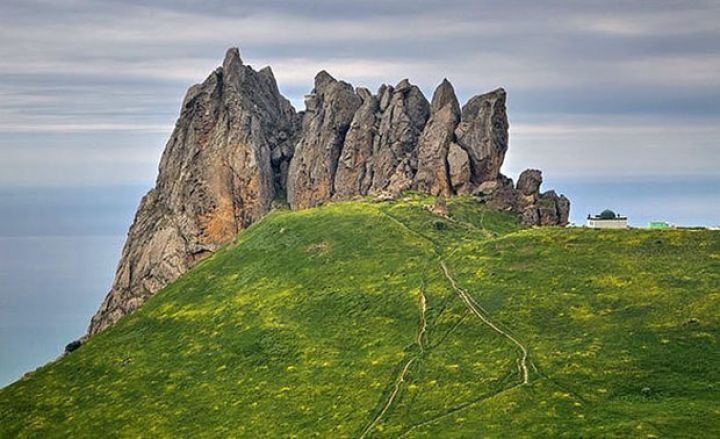

TARİXİ-Qafqaz Albaniyasında Xobota şəhəri haqqında məlumat verən Karl von Pruner həmçinin qədim mənbələrdə Firuz Qubad adlanan şəhərin adı Sasani hökmdarı I Qubadın adından götürüldüyünə inanılır Yaqutun lokallaşdırılmasına görə (1227) "Bab əl-Əbvab, yaxud Dərbənd yaxınlığındakı bu qədim şəhər", ehtimal ki, indiki Qubanın yerində olmuşdur. IX–X və daha əvvəlki ərəb mənbələrində Qubanın adına rast gəlinmir. Lakin A.A.Bakıxanov Şirvanşah Kavus ibn Keyqubadın (ö. hicri 774-cü il; miladi 1372–1373-cü illər) Quba yaxınlığında gözəl türbəsini gördüyünü xəbər verir ki, bu da həmin yerdə daha qədim zamanlarda və XIV əsrdə qəsəbə və ya şəhər olduğunu fərz etməyə imkan verir. XVI əsrə aid daha sonrakı mənbədə yerli sakinlərin dilindən xəbər verilir ki, "dağın yamacında qala olan Quba çoxdan dağılmışdır. Həmin vaxt (1582-ci il) Quba çoxlu kəndi əhatə edən nahiyənin adı idi". Beləliklə, Quba adı XVI əsrədək gəlib çıxmışdır. Bu dövrdə Quba adı altında nahiyə mövcud olmuş, qala isə dağılmışdı. S. Aşurbəyli belə hesab edir ki, Quba Xilafətin Azərbaycanı və Dağıstanı istila edərkən Mədinə yaxınlığındakı Quba şəhərindən gəlmə ərəb tayfalarının VII əsrdə özləri ilə gətirdikləri eyniadlı toponimlər sırasına daxildir. Bu adın ərəb Xilafətinin istila etdiyi ərazidə geniş yayılma arealı, eləcə də, Quba şəhərini təsvir edən Zeynalabdin Şirvaninin (XIX əsr) aşağıdakı məlumatı bu fərziyyəni təsdiq edir: "Qədimdə ərəb tayfalarından biri Qubaya köçərək burada məskən salmışdır". Firuz Qubada köçüb gələn ərəblər Mədinənin yaxınlığındakı şəhərin adı ilə səsləşən adı eşitdikdə, Məsqət kimi, onu da tanış olan Quba adı ilə adlandırmışlar.Məsud ibn Namdar Sədunun (indiki Siyəzən) daxil olduğu nahiyədə Qavadan kəndinin adını çəkir. Burada Qavad adına yer, şəhər və s.bildirən "an" suffiksi artırılmışdır. Ola bilər ki, bu elə həmin Firuz Qubad Qubanın qədim adıdır. XVIII əsrin ortalarında Quba xanlığı yaradılmış.Hüseynəli xanın oğlu Fətəli xanın (1758–1789) dövründə Quba xanlığının mövqeyi artmışdır. 1806-cı ildə Quba xanlığı Rusiyaya birləşdirildi və əyalətə çevrildi. Yenidən təşkil olunmuş Quba qəzası 1840-cı ildə Dərbənd quberniyasına, 1860-cı ildə isə Bakı quberniyasına daxil edildi. 1930-cu ildə Quba Azərbaycanın inzibati rayonlarından birinə çevrildi.
Böyük Qafqazın şimal-şərq yamaclarında, Baş Qafqaz sıra dağlarının suayrıcı xətti ilə Samur-Dəvəçi ovalığı arasında yerləşir. Rayonun relyefi dağətəyi maili düzənliklər, orta və yüksək dağlıq sahələrdən ibarətdir. Şimal-şərq hissədə Qusar maili düzənliyi və Samur-Dəvəçi ovalığı yerləşir. Cənub-qərb sərhəd Baş Qafqaz silsiləsinin suayrıcısı boyu keçir. Baş Qafqaz silsiləsinə paralel olaraq Yan silsilə uzanır. Burada Yarımsa, Yerfi, Mıxtökən, Təngə silsilələri qollar formasında ayrılır. Rayon ərazisində Qızılqaya (3726 m), Babadağ (3629 m), Şahnəzər (2874 m) zirvələri yüksəlir. Geoloji yaşına görə Yura, Təbaşir, Neogen və Antropogen çöküntüləri yayılmışdır. Faydalı qazıntılara yanar şist, çınqıl, qum, gil aiddir, mineral bulaqlar səthə çıxır. Düzənlik və dağətəyi sahələrdə yağıntıları bərabər paylanan mülayim isti, yüksək dağlıqda soyuq və dağ-tundra iqlimi hakimdir. Yanvarda orta temperatur −2 °C-dən −14 °C-yə qədər, iyulda 5 °C-dən 23 °C-yə qədərdir. Yağıntıların illik miqdarı düzənliklərdən dağlara doğru 500 mmm-dən 900 mm-ə qədər artır, əsas hissəsi payızda düşür. Rayonun ərazisindən axan Qudyal, Qaraçay, Vəlvələ çayları Xəzər dənizi hövzəsinə aiddirlər. Əsasən torflu və çimli dağ-çəmən, qonur-meşə, qəhvəyi dağ-meşə torpaqları yayılmışdır. Dağlıq sahələrdə alp və subalp çəmənlikləri geniş sahə tutur, bundan aşağılarda fısdıq, vələs və palıd ağaclarının üstünlük təşkil etdiyi enliyarpaqlı dağ meşələri yayılır.
Memarlıq abidələrindən Ağbil türbələri (XVI əsr), Alpan kəndində Subaba türbəsi (XVI əsr), Birinci Nügədi kəndində məscid və minarə (XVII–XIX əsrlər), Xınalıq kəndində bürc, Qudyalçay üzərindəki Tağlı körpü və s. mühafizə olunur. Avropanın ən uca dağ kəndi sayılan Xınalıq kəndində IX əsrə aid Atəşpərəstlər məbədi, Ağbil kəndində XVI əsrə aid türbələr, Quba şəhərində XIX əsrə aid Səkinəxanım, Hacı Cəfər və Cümə məscidləri, Gümbəzli hamam vardır. Bundan başqa Rustov və Zıxır kəndlərində "Ələmu" və "Yeddilər baba" adlı qala və tarixi məscid vardır.
.jpeg)